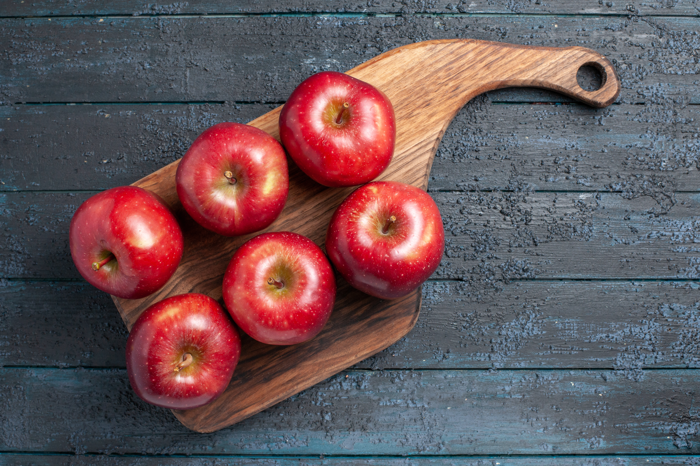

“Today I have three apples. Yesterday I ate one apple. How many apples do I have today?” At first glance, this looks like a straightforward subtraction problem. Many people might rush to calculate 3 – 1 = 2. But if we look closely, the question is actually about comprehension, not calculation.
The riddle gives us two pieces of information:
Many people fall into the trap of treating this like a math exercise. They see “three apples” and “ate one” and instinctively subtract. But this ignores the wording: eating an apple yesterday doesn’t take away from what you have today unless the question connects the two events directly.
Because the problem explicitly says “Today I have three apples,” that is the answer. The mention of yesterday is a distraction designed to test reading skills and logical attention rather than arithmetic ability.
So, no matter what happened yesterday, today’s count is already given: 3 apples.
This puzzle shows how important it is to read carefully before jumping to conclusions. In problem-solving—whether in school, business, or daily life - sometimes the challenge isn’t the math itself, but the interpretation of the information. Words matter as much as numbers.
The correct and only logical answer is: You have three apples today. Yesterday’s apple doesn’t change that fact. The riddle’s trick is in making you think subtraction is required, when in reality, the solution comes from careful reading.
